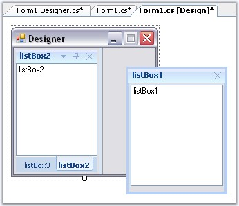
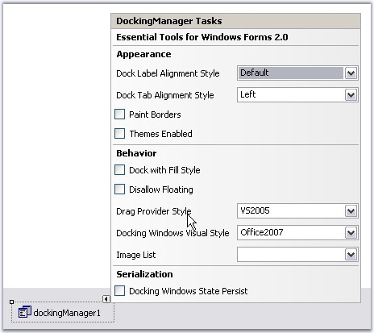

Dragging and Docking at DesignTime
DockingManager supports dragging and docking of the dockable controls at the design time itself. It also lets you float the controls.

Figure 63: DesignTime Tabbing and Floating of the Docked Controls
Property Settings using Task Window
The Task Window of the DockingManager at design time lets you apply certain Appearance and behavior settings.

Figure 64: Docking Manager Tasks Window